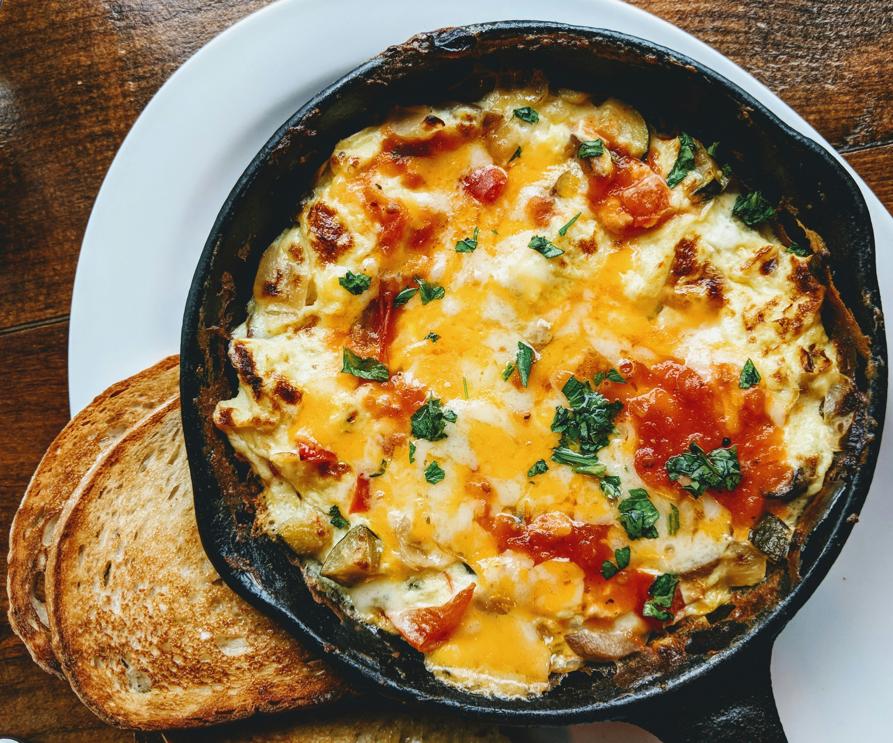

Home
Mac and Cheese

Ultra creamy and mouth watering mac and cheese that you can't put down. This is the perfect comfort food to share with your family.
- Elbow Pasta
- 1/2 lb Shredded Medium Cheddar
- 1 lb Shredded Mozzerela Cheese
- 1 lb Shredded Colby Jack Cheese
- 1 tbsp flour
- 1 cup heavy cream
- 1 tbsp butter
- Salt
- Pepper
- Bring a large sauce pan to medium heat and add in your butter
- Bring a large pot of water to a boil and add in your pasta and cook till el dente
- Once the butter has metled add in your flour and salt and pepper to taste and mix for 2 min
- Stir in the heavy cream slowly
- Once the heavy cream is incorportated add in the cheese with only small handfulls at a time and not adding in more cheese until it has fully melted.
- Add in half of the pasta to a cassserole dish and pour on half of the cheese mixture on top
- Add in the last half of pasta and the rest of the cheese mixture
- Place in the oven on 350 degrees for 40 minutes.
- Plate and serve